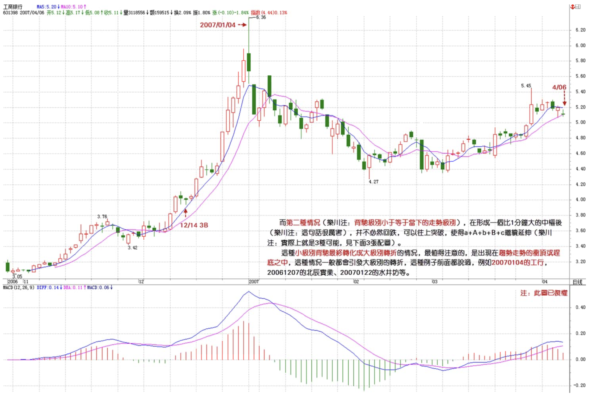
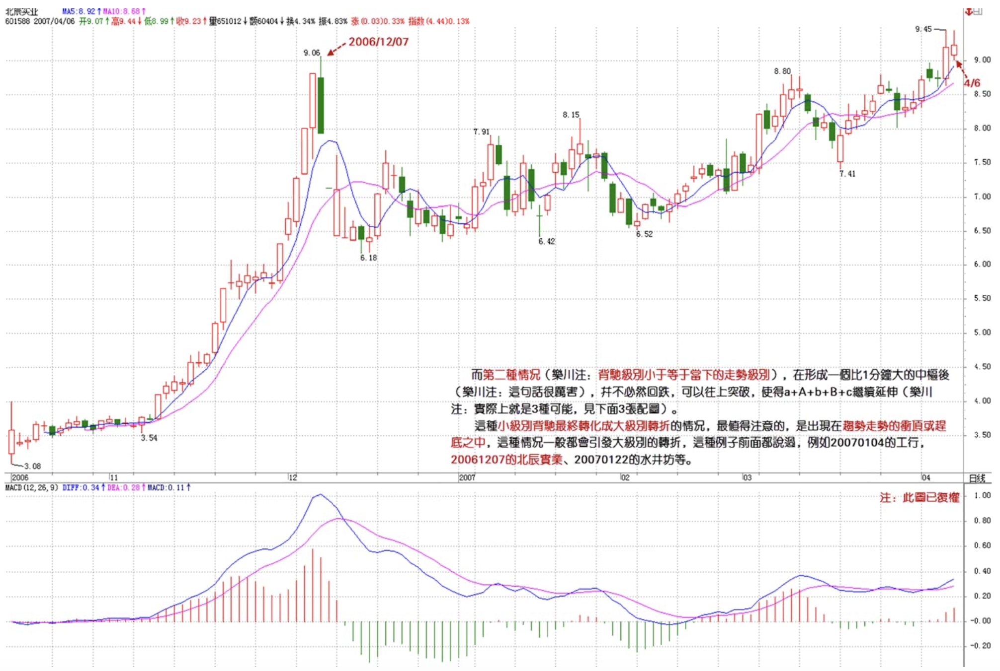
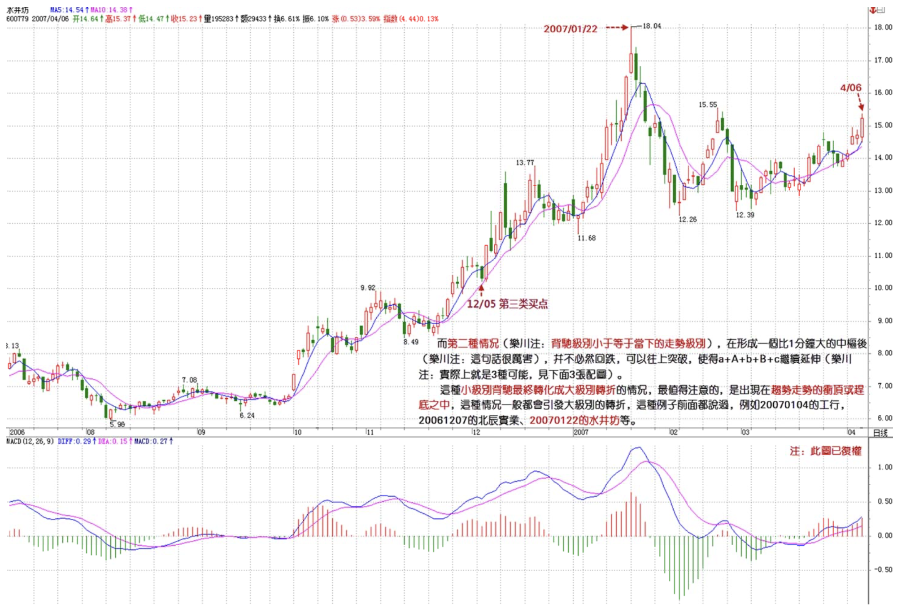

教你炒股票43：有关背驰的补习课
2007/4/6 15:31:28
发现很多人对最基础的背驰问题还是不大清楚，周末，来一补习。关于如何判断背驰，背驰与盘整背驰的区别之类问题就不说了，这个太基础，连这都没搞清楚，那最好的办法就是重修，而不是补习。
转折必然由背驰导致，但背驰导致的转折并不一定是同一级别的。在“教你炒股票29：转折的力度与级别”中有“缠中说禅背驰-转折定理：某级别趋势的背驰将导致该趋势最后一个中枢的级别扩展、该级别更大级别的盘整或该级别以上级别的反趋势。”这是一个十分重要的定理，这定理说明了什么？就是某级别的背驰必然导致该级别原走势类型的终止，进而开始该级别或以上级别的另外一个走势类型。
由于不允许“上涨+上涨”、“下跌+下跌”的情况，所以，这定理对实际操作就很有意义了。例如，一个1分钟级别的顶背驰，就意味着必然导致一个至少1分钟级别的盘整或下跌走势类型，这就为背驰以后可能的走势以及级别给出了很明确的划定。有人经常问，为什么1分钟顶背驰后还涨，那有什么奇怪的，只要有一个1分钟的盘整，那就可以继续涨，这是1分钟顶背驰后可能的情况之一，当然，还有其他可能的情况，例如，最极端的，制造出一个年线级别的下跌，但不能说这个制造是由于1分钟顶背驰造成的，因为这是1分钟顶背驰后，形成的盘整或下跌逐步级别扩张，最后才慢慢形成的，如果随便看到一个1分钟顶背驰就说要形成年线级别大调整，那就是脑子水太多了。如果市场的转折与背驰都有这在级别上一一对应关系，那这市场也太没意思、太刻板了，而由于这种小级别背驰逐步积累后导致大级别转折的可能，才使得市场充满当下的生机。
注意，这两种不同的转折方式的区分是十分关键的。所有的转折都与背驰相关，但加上背驰的级别与当下走势级别的关系，就有了这两种不同的转折方式。由于背驰的级别不可能大于当下走势的级别，例如一个30分钟级别的背驰，只可能存在于一个至少是30分钟级别的走势类型中，所以就有这两种不同转折方式的明确分类。
一、背驰级别等于当下的走势级别
例如，一个30分钟的走势类型，出现一个30分钟级别的背驰，那么这个背驰至少把走势拉向该30分钟走势最后一个中枢，当然就会跌破或升破相应的高点或低点。注意，这种情况包括进入背驰段的情况，例如，一个30分钟的走势类型，在30分钟级别进入背驰段，当然，这个背驰段并不一定就演化成背驰，因为，小级别的延伸足以使得大级别最终摆脱背驰，这与当下的走势判断相关。
二、背驰级别小于于当下的走势级别
这种情况下，是走势已经明显没有相应级别的背驰，例如，一个30分钟的走势类型，明确显示没有出现30分钟的背驰，也就是背驰段最终不成立，但却出现一个1分钟级别的背驰，用一个最简单的形式向上的a+A+b+B+c，A、B是30分钟中枢，在c中出现1分钟背驰，而c对b在30分钟级别并没有出现背驰，这时候并不必然保证c的1分钟转折的最终走势就一定不跌回B里，但即使这个回跌出现，其形式也和第一种情况不同。这第二种情况，必然要先形成一个比1分钟级别要大的中枢，然后向下突破，最终形成回跌到B中的走势。
有人可能要问，第一种情况中如果是5分钟级别的回跌，也会形成一个比1分钟级别大的中枢，那和第二种情况有什么区别？这区别太大了，在第一种情况中，其回跌是必然的，而第二种情况，在形成一个比1分钟大的中枢后，并不必然回跌，可以往上突破，使得a+A+b+B+c继续延伸。这种小级别背驰最终转化成大级别转折的情况，最值得注意的，是出现在趋势走势的冲顶或赶底之中，这种情况一般都会引发大级别的转折，这种例子前面都说过，例如20070104的工行，20061207的北辰实业、20070122的水井坊等。



以上两种情况，对走势的分解也是很有意义的，例如对一个30分钟的走势类型，其完结也同样有相应的两种情况，最普通的一种，例如出现一个30分钟的背驰，从而完成一个30分钟级别走势类型，在这种情况下，对该走势类型的分解就不存在任何含糊的地方，前后两个走势类型，就以该背驰点为分界；至于小级别背驰引发大级别转折的情况，这种情况比较复杂，但分解的原则是一致的，就是：
缠中说禅走势类型分解原则：一个某级别的走势类型中，不可能出现比该级别更大的中枢，一旦出现，就证明这不是一个某级别的走势类型，而是更大级别走势类型的一部分或几个该级别走势类型的连接。
这里，把上面第二种情况下的分解可能分析如下：
不妨还是以上面向上30分钟级别的a+A+b+B+c为例子，在c中出现一个1分钟级别背驰，不妨假设后面演化出一个30分钟中枢C，如果C和B没有任何重叠，那就意味着原来的a+A+b+B+c并不是一个完成了的30分钟走势类型，该走势类型将延伸为a+A+b+B+c+C，相应的分解要等到该走势类型完成了才可以进行；如果C和B有重合，那么a+A+b+B+c+C=a+A+b+（B+c+C），其中（B+c+C）必然演化成一个日线中枢，那么a+A+b+B+c只是一个日线级别走势类型的一部分，如果一定要按30分钟级别来进行同级别分解，那么该分解点就是那1分钟的背驰点，a+A+b+B+c+C=（a+A+b+B+c）+C。
有了以上的例子，就对如何用背驰对走势分解的基本原则有一个大概的了解了，熟悉了这些分解方法，市场的走势图就不会是天书了，而是如自己的掌纹一样清晰可辩。
回复
缠中说禅 2007/4/6 15:32:12
今天深圳已经实现对那条压力线的冲击，不过还没有突破站上去，某种程度上，这是汉奸最后的防线了，一旦突破站稳，那深圳的1万点就在本ID的强大炮火下了。
昨天说了，汉奸现在也到处哭诉，在市场上没法成功，就在市场下努力，也亏汉奸干得出。希望下周汉奸能倾其所有，在这里大打一战，别搞到本ID都没兴趣搭理你们就没意思了。
目前，二线股的行情已经有点不可阻挡了，由于10元上下的股票不断往上顶，就促使整个股价结构发生松动，15、20、30、甚至更高的二线股都被带动起来，由此也就知道本ID当时特别从10元上下二线股下手的深意。
现在，本ID的星火已经有点燎原，也就不必要一定是什么10元上下的，只要盘整到位，业绩支持的二线股，都要启动，从而整个股价结构上一台阶，为下一轮三线股的再启动腾出空间。
不过，任何时候都不应该追高，应该选择好买卖点，特别对于散户来说，否则，一个小的震荡就足以出问题。目前，在政策上存在微妙的地方，汉奸的哭诉能起多大作用，谁都说不准，那是另外一个战场的战争，这里就不方便说了。
缠中说禅 2007/4/6 15:42:17
[匿名] YY
2007-04-06 15:40:08
老大，能不能说点新鲜的东西啊
课程好久没更新了
–
当然，但现在很多人跟不上，用一两节时间来补习一下，也是必要的。
缠中说禅 2007/4/6 15:43:18
[匿名] 平安保险
2007-04-06 15:40:40
老师 是不是新股的周线还没有走出来 就不会那么快启动啊 这时候 看什么级别的 601318 这样的股票 短期是不是不值得参与 什么线都走不出来 要象大唐发电 四个月了 才会发作 盼复
==
新股就看短线的图形。
缠中说禅 2007/4/6 15:45:18
[匿名] 缠心雕龙
2007-04-06 15:42:05
博主好，39课中讲到的同级分解流程有点疑问：
这种操作不管这么多，只理会一点，就是Ai与Ai+2之间是否盘整背驰，只要盘整背驰，就在i+2为偶数时卖出，为奇数时买入。如果没有，当i为偶，若Ai+3不跌破Ai高点，则继续持有到Ai+k+3跌破Ai+k高点后在不创新高或盘整顶背驰的Ai+k+4卖出，其中k为偶数。
–
请问，当Ai与Ai+2之间未盘背，若Ai+3不跌破Ai高点，而Ai+4对Ai+2盘背，Ai+4卖不卖？
看原文应该是说不卖，则不卖的话，意味着即使发生Ai+4对Ai+2盘背，也不一定就卖出，还要看Ai+3是否跌破Ai高点。为何不在Ai+4先出来呢（可以避免Ai+5出现大跌）？
==
为什么不卖？不是有这一句-或盘整顶背驰的Ai+k+4卖出
缠中说禅 2007/4/6 15:49:55
[匿名] 后知后觉
2007-04-06 15:44:23
感谢禅主的教诲，赐我打开愚钝的钥匙！
如你所分析，的确现在都很谨慎。不过，低开后瞬间拉起，还是换了思路了。只是不知道是盘中主力拉起，还是场外进来的饿狼？
按照质地，分析价值，都感觉601318值得搞，只是没有老大这样的人去挑逗，它股性不是很活。下周平安出年报了，申银的分析报告我看了，挺细的，业绩应该在0。7～1。5，就看一些东西怎么计提估值了。
今日平安表现相对有些亢奋，好像有些“驿动”的渴望。按成本分析，现在就是第一天尾盘的价位。不知道老大是否有兴趣去在年报前后去干一票？
期待你的回答和分析！
谢了！
==
平安没什么问题，现在最大的压力是有限售部分，但不构成实质影响。后面几个大家伙的业绩都很好，汉奸也少了一个借口
缠中说禅 2007/4/6 15:53:58
[匿名] 新浪网友
2007-04-06 15:45:33
老师好. 大唐电信昨日发布业绩预告，早前预计扭亏为盈在昨日的预告中变成了预亏，令市场哗然，股价也因此跌停。传闻沸沸扬扬.
我是新股民 我现有（600198）15000股19.65买进 从来没有见过这样的 架势！现在不知道是去是留 请教该如何是好？ 谢谢 .
=
这没什么，如果有经验，今天可以补仓，弄两次短差成本就下来，这股票经过洗盘，还会上去的，不过需要点时间。
缠中说禅 2007/4/6 15:57:04
[匿名] 那一天
2007-04-06 15:45:37
缠姐我是同学介绍来的,刚学到十八课
您在十七课反复用到级别这两字, 能否给个对’级别’的准确解释!
我对级别的理解有两种:
周K线,次级日K线, 再次级60分K线, 等等.
走势上,(举例) 周K线总体为向上,但里包含向下,整理, 向上
这包含在其中的就是次级别.
是否两种理解都对??
我先谢您了!
==
课程里都有，请先把所有课程都看一遍。
缠中说禅 2007/4/6 16:00:06
[匿名] 兰兰
2007-04-06 15:56:08
姐姐好!同学们好!好久没有和姐姐聊了!
向姐姐请教细节:
本为0后,挣股票做短差每次卖出时,只收回本金,对吗?如3000元本金,每次短差都是拿回3000元,股价涨到30元短差买点时只能买100股对吗?
==
一般，成本为0后，可以用先卖后买的方法，例如20卖1万，19就可以回补1万多股了，这样股数越来越多，前提是这股票还有中长线潜力。
缠中说禅 2007/4/6 16:04:23
[匿名] 瞎鼓捣
2007-04-06 15:58:50
老大好
原来备驰段也不一定发生备驰啊，这种情况多不多？具体怎么分辨？
==
这很正常，如果用MACD来辅助看，拉回0轴后再上去，都可以先看成是进入背驰段，例如现在大盘的日线上，但最后是否黄白线创新高，在刚走的时候是不可能知道的，然后就要看小级别的结构，如果小级别的走势特别强，使得黄白线创出新高，那就不存在背驰的问题了。
缠中说禅 2007/4/6 16:05:22
[匿名] 中信海直
2007-04-06 16:00:50
请问mm，为什么有的三段重叠算中枢，有的就不算，是不是只有均线交叉的情况下才算作中枢
==
和均线没关系，关键是要都是次级别的
缠中说禅 2007/4/6 16:06:47
[匿名] 新年好
2007-04-06 15:48:31
请问缠姐，今天课中的两种情况，如果是第二种30分钟向上情况，如果是C和B没重合，是不是就不用参与，如果是C和B重合，是不是在那个1分钟的背驰点先出来？但是如果预先判断会不会重合呢？
==
这负责，以后会说到，
缠中说禅 2007/4/6 16:10:51
对不起，周末要出去腐败，周五北京的交通很麻烦，本ID虽然不用自己开车，但走得晚，塞车也很难受，先下了。
各位周末腐败快乐。
再见。